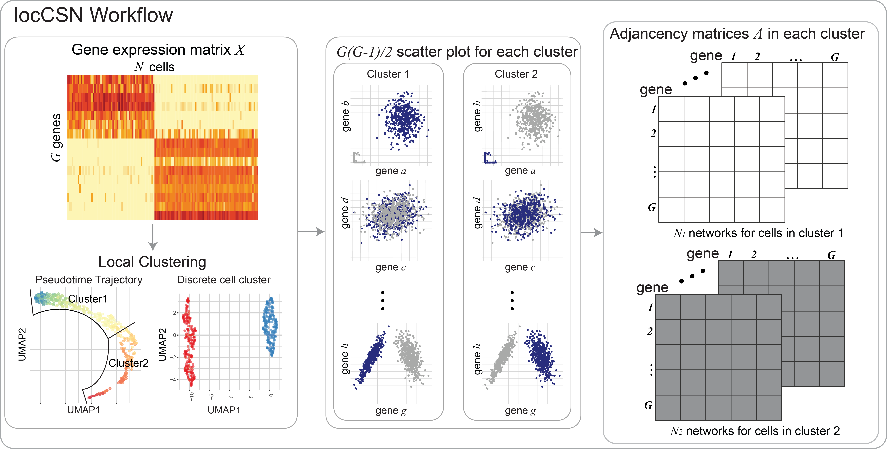

Tutorial of construction local cell specific networks from single cell data
locCSN is a package that calculates gene networks for each cell from single-cell datasets. 
locCSNThis work has not published yet, please see bioRxiv.
First install locCSN pacakge. All locCSN python functions are also stored in Python Folder.
Please download datasets stored in DataStore. Large datasets can be accessed by this link.
| Dataset | Chutype | ASD Brain | Brain Cortex Atlas |
|---|---|---|---|
| Reference | Chu et al.(2016) | Velmeshev et al.(2019) | Polioudakis et al.(2019) |
| # of cell | 1018 | 104,559 | 35,543 |
| genes for analysis | 51 | 942 | 444 |
| Data Availability | GSE75748 | PRJNA434002 | website |
In this example, we reproduce the results of Chutype dataset in paper.
There are 51 marker genes and 1018 cells from 7 cell types. The gene expression are stored in logChumaker.txt and corresponding cell types in chutypectname.txt. Cell types are H1, H9, DEC, EC, HFF, NPC and TF. In our paper, we focus on cell type DEC and NPC.
# Import packages
import locCSN
import os
import scanpy as sc
import pandas as pd
import numpy as np
import matplotlib.pyplot as plt
# Set path to data
os.chdir('yourpathtodata/Chutype/')
# read in Chutype dataset
data = sc.read_text('logChumarker.txt')
data.shape
data = data.transpose() # 1018 cells * 51 genes
cell_type = pd.read_csv('chutypectname.txt', sep = ' ')
data.obs = cell_type # The observation are labeled with cell types.
# Plot the Heatmap of gene expression
sc.pl.heatmap(data, data.var.index, groupby= "cell_type", dendrogram = False, swap_axes = True,
show_gene_labels= True, cmap='Wistia', figsize=(8,6))After loading gene expression matrix and cell types, we first show the absolute Pearson’s correlation for DEC and NPC cells.
data_dec = data[data.obs.cell_type == "DEC", ]
X_dec = data_dec.X.transpose()
data_npc = data[data.obs.cell_type == 'NPC', ]
X_npc = data_npc.X.transpose()
corr_dec = np.corrcoef(X_dec)
corr_npc = np.corrcoef(X_npc)
np.fill_diagonal(corr_dec, 0)
np.fill_diagonal(corr_npc, 0)
plt.subplot(1, 2, 1)
plt.imshow(abs(corr_dec), vmin=0, vmax=0.7, cmap='RdPu')
plt.title('DEC', fontweight ="bold")
plt.subplot(1, 2, 2)
plt.imshow(abs(corr_npc), vmin=0, vmax=0.7, cmap='RdPu')
plt.title("NPC", fontweight = "bold")
plt.suptitle("Absolute Pearson`s Correlation", fontsize = 14, fontweight = "bold")The heatmaps for absolute Pearson`s correlations is
Now we calculate the CSN test statistics using function csn for cell type DEC and NPC.
import time
start = time.time()
csn_dec = locCSN.csn(X_dec, dev = True)
end = time.time()
print(end - start)
start = time.time()
csn_npc = locCSN.csn(X_npc, dev = True)
end = time.time()
print(end - start)
#1275 pairs need calculation
#60.3697772026062
#903 pairs need calculation
#35.72847938537598Now we show what function csn produces. For a specific cell, we compute each pair of genes and store test statistics in an upper diagnol matrix.
type(csn_dec)
# list
len(csn_dec) # 138 cells
# Let's see the test statistics for the first cell in DEC
plt.imshow(csn_dec[0].toarray(), vmin = -6, vmax = 6, cmap = 'coolwarm')
plt.title('DEC one cell', fontweight = "bold")
plt.colorbar()
#plt.savefig('dec_one_cell.png')As we stated in our paper: ‘’Althogh individual CSNs are estimated with considerable noise, average CSNs provide stable estimates of network structure, which provide better estimates of gene block structure.’’ For CSN test statistics matrices within a cell group, we first threshold test statistics and averaged the adjacency matrices with the cell group. The averaged CSN is the estimate of gene co-expression of the cell group. In this example, we thresholded at \(\alpha = 0.05\).
from scipy.stats import norm
# Cutoff at norm(0.95)
csn_mat = [(item > norm.ppf(0.95)).astype(int) for item in csn_dec]
avgcsn_dec = sum(csn_mat).toarray()/len(csn_mat) + np.transpose(sum(csn_mat).toarray()/len(csn_mat))
csn_mat = [(item > norm.ppf(0.95)).astype(int) for item in csn_npc]
avgcsn_npc = sum(csn_mat).toarray()/len(csn_mat) + np.transpose(sum(csn_mat).toarray()/len(csn_mat))
plt.subplot(1, 2, 1)
plt.imshow(avgcsn_dec, cmap = "Greens", vmin = 0, vmax = 0.7)
plt.title('DEC', fontweight ="bold")
plt.subplot(1, 2, 2)
plt.imshow(avgcsn_npc, cmap = "Greens", vmin = 0, vmax = 0.7)
plt.title('NPC', fontweight = 'bold')
plt.suptitle("Averaged CSN, cut at alpha = 0.05", fontsize=14, fontweight = "bold")The heatmaps for DEC and NPC are
For comparison between two groups of cells using CSNs, we use the dataset from ASD Brain dataset (Velmeshev et al. 2019). We focus on 942 expressed SFARI ASD genes and compare gene co-expression networks of control and ASD group using Pearson’s correlation and CSN. The comparison methods are sLED and DISTp.
The ASD Brain dataset has 104,559 cells of 16 cell types and is very sparse. We use Metacell(Baran et al. 2019) to reduce the sparsity for the dataset. Please see Metacell website for how to generate metacells. The following analysis is based on metacells, which are stored in this folder.
For demonstration, we start with metacell expression of 4 Neuron layer cell types: L2/3, L4, L5/6 and L5/6-CC and 942 SFARI genes. The metacell expressions are stored in this folder. Please download them in your own directory.
Let’s take a look at the expression of neuron layers. There are 1778 metacells and 942 genes.
# import scanpy as sc
# load data
os.chdir('yourpathtodata/Velme/')
data = sc.read_text('Velme_log_mc_cpm_L.txt')
data = data.transpose()
data.shape # 1778 metacells * 942 genes
meta_L = pd.read_csv('Velme_meta_mc_L.txt', sep = ' ')
meta_L.columns
# Index(['sampleID', 'broad.cluster', 'cluster', 'diagnosis'], dtype='object')
data.obs = meta_L
sc.pl.heatmap(data, data.var.index, groupby= ["cluster", "diagnosis"], dendrogram = False, swap_axes = True,
cmap='Wistia', figsize=(8,4))The metadata of metacells can be accessed in data.obs.
data.obs['cluster'].value_counts()
#L2/3 772
#L4 449
#L5/6-CC 341
#L5/6 216
data.obs['diagnosis'].value_counts()
#ASD 936
#Control 842
grouped_data = data.obs.groupby(['cluster', 'diagnosis'])
grouped_data.describe()['sampleID']['count']
#cluster diagnosis
#L2/3 ASD 414.0
# Control 358.0
#L4 ASD 238.0
# Control 211.0
#L5/6 ASD 107.0
# Control 109.0
#L5/6-CC ASD 177.0
# Control 164.0CSN test statistics are calcaulted within cell group. Now we focus on one cell-group: L4, which contains 449 metacells (238 ASD + 211 Control). Let’s first subset the neuron layers to L4 cell group.
ct_name = "L4"
data_L4 = data[data.obs.cluster == ct_name, :]
data_L4.shape # 449 metacell * 942 genes
mcknn = pd.read_csv('mcknn100_' + ct_name + '.txt', sep = ' ')
mcknn = mcknn.to_numpy()
X_L4 = data_L4.X.transpose()The runtime of 942 genes is longer than 1 hour. Therefore we provide a toy example only use a subset of 20 genes and the runtime is approximately 20-40s.
start = time.time()
csn_L4_sub = locCSN.csn_loc(X_L4[0:20, :], mcknn)
end = time.time()
print(end_start)
# 25.824307203292847For storage and export to different software platforms, we flatten the CSN test statistics matrices. For each CSN matrix, we vectorize it to a vector, then column-bind the vectors by cells. The final csn flatten matrix is a gene pair * cell matrix. The flattened matrix for \(G\) genes and \(N\) cells is of size \(G(G-1)/2 \times N\).
csn_L4_sub_flat = locCSN.csntoflat(csn_L4_sub) # 20 genes
csn_L4_sub_flat.shape #190 gene pairs * 449 cells
# np.savetxt('csn_'+ct_name+'_sub_flat.txt', csn_L4_sub_flat, delimiter = '\t')For analysis and visualization, we threshold the CSN test statistics at \(\alpha = 0.01\) and average CSN within ASD and Control group respectively.
csn_mat = [(item > norm.ppf(0.99)).astype(int) for item in csn_L4_sub]
meta_L4 = meta_L[meta_L['cluster'] == ct_name]
c_index = (meta_L4['diagnosis'].to_numpy() == 'Control').tolist()
csn_mat_L4_control = [x for x, y in zip(csn_mat_L4, c_index) if y]
a_index = (meta_L4['diagnosis'].to_numpy() == 'ASD').tolist()
csn_mat_L4_asd = [x for x, y in zip(csn_mat_L4, a_index) if y]
avgcsn_L4_sub_control = sum(csn_mat_L4_control).toarray()/len(csn_mat_L4_control)
avgcsn_L4_sub_control = + np.transpose(avgcsn_L4_sub_control)
avgcsn_L4_sub_asd = sum(csn_mat_L4_asd).toarray()/len(csn_mat_L4_asd)
avgcsn_L4_sub_asd = + np.transpose(avgcsn_L4_sub_asd)
my_dpi = 50
fig, axes = plt.subplots(nrows=1, ncols=2, figsize=(10, 5), dpi=my_dpi)
print(fig)
print(axes)
fig.suptitle("Avg CSN for L4, 20 genes, cut at alpha = 0.01", fontsize = 14, fontweight = "bold")
axes[0].set_title('Control', fontweight = "bold")
axes[0].imshow(avgcsn_L4_sub_control, cmap = "Greens", vmin = 0, vmax = 0.5)
axes[1].set_title('ASD', fontweight = "bold")
axes[1].imshow(avgcsn_L4_sub_asd, cmap = "Greens", vmin = 0, vmax = 0.5)
#fig.savefig('Velme_Avg_csn_L4_sub.png')For visualization in different software platform, we store averaged CSN for ASD and Control group in text file.
# save averaged CSN file control + ASD
avgcsn_flat_L4_sub = csntoflat([avgcsn_L4_sub_control, avgcsn_L4_sub_asd])
np.savetxt('avgcsn_asd_data_'+ct_name+'_sub.txt', avgcsn_flat_L4_sub, delimiter='\t')In this section, we demonstrate how we compare the gene co-expression using DISTp and sLED. #### DISTp We also inplement the test of DISTp in locCSN package. DISTp requires CSN adjacency matrices that are arranged by cell group.
# Arrange adjacency matrices by cell group
csn_mat_L4_new = csn_mat_L4_control + csn_mat_L4_asd
n_control = len(csn_mat_L4_control) # number of the first group
start = time.time()
pval = locCSN.DISTp(csn_mat_L4_new, n_control)
end = time.time()
print(end-start)
# 33.536951303482056
pval
# 0.252The DISTp pvalue for this toy example is 0.252, which is not significant. The heatmaps of the toy example with 20 genes also show similar gene connection strengths for Control and ASD groups.
The code for all 942 genes are provided below. Please do not run when you go through the demo. It will take a long time to finish.
# code for 942 genes of L4. Do not run!!! It will take too long for demo
csn_L4 = locCSN.csn_block_loc(X_L4, mcknn)
csn_L4_flat = locCSN.csntoflat(csn_L4)
# save the flatten the CSN test statistics for sLED. This is a extremely big file
np.savetxt('csn_asd_loc_flat_',ct_name, '.txt', csn_L4_flat, delimiter='\t')
csn_mat_L4 = [(item > norm.ppf(0.99)).astype(int) for item in csn_L4]
meta_L4 = meta_L[meta_L['cluster'] == ct_name]
c_index = (meta_L4['diagnosis'].to_numpy() == 'Control').tolist()
csn_mat_L4_control = [x for x, y in zip(csn_mat_L4, c_index) if y]
a_index = (meta_L4['diagnosis'].to_numpy() == 'ASD').tolist()
csn_mat_L4_asd = [x for x, y in zip(csn_mat_L4, a_index) if y]
avgcsn_L4_control = sum(csn_mat_L4_control).toarray()/len(csn_mat_L4_control)
avgcsn_L4_control = + np.transpose(avgcsn_L4_control)
avgcsn_L4_asd = sum(csn_mat_L4_asd).toarray()/len(csn_mat_L4_asd)
avgcsn_L4_asd = + np.transpose(avgcsn_L4_asd)
# save averaged CSN file control + ASD
avgcsn_flat_L4 = csntoflat([avgcsn_L4_control, avgcsn_L4_asd])
np.savetxt('avgcsn_asd_data_'+ct_name+'.txt', avgcsn_flat_L4, delimiter='\t')
csn_mat_L4_new = csn_mat_L4_control + csn_mat_L4_asd
n_control = len(csn_mat_L4_control)
pval = locCSN.DISTp(csn_mat_L4_new, n_control)
pval
# 0.039sLED is a R package for two-sample test for high-dimensional covariance matrices. Details are in this GitHub repo. Let’s get started with installation:
install.packages("devtools") ## if not installed
library("devtools")
devtools::install_github("lingxuez/sLED")
Apply sLED to correlation matrix of L4 cell group.
library(sLED)
# read in gene expression and metadata files
setwd('yourpathtodata/Velme/')
log.mc.cpm.L = read.table('Velme_log_mc_cpm_L.txt')
meta.mc.L = read.table('Velme_meta_mc_L.txt')
# Let's take L4 as an example
ct.name = 'L4'
meta.mc.diag = as.numeric(meta.mc.L$diagnosis[meta.mc.L$cluster == ct.name] == 'ASD')
log.mc.L = data.matrix(log.mc.cpm.L[, meta.mc.L$cluster == ct.name])
log.mc.L[1:5, 1:5]
# mc_L_4 mc_L_7 mc_L_10 mc_L_25 mc_L_28
#SAMD11 0.000000 0.000000 0.000000 0.000000 0.000000
#SKI 5.797950 4.036630 5.298243 0.000000 3.842033
#SLC45A1 0.000000 2.814837 0.000000 0.000000 2.269254
#RERE 6.489579 5.775307 5.702040 5.917348 5.959781
#CA6 0.000000 1.965827 0.000000 0.000000 1.894637
# rownames of expression are ASD genes
asd.genes = rownames(log.mc.L)
result.cor = sLED(X = t(log.mc.L[, meta.mc.diag == 0]), Y = t(log.mc.L[, meta.mc.diag == 1]),
sumabs.seq = 0.2, npermute = 100, seeds = c(1:100), adj.beta = 0)
# 100 permutation started:
# 10 ,20 ,30 ,40 ,50 ,60 ,70 ,80 ,90 ,100 ,permutations finished.
result.cor$pVal
# [1] 0.8
Although sLED is designed for covariance matrices, the idea of comparing differences matrix can be applied to co-expression measured by CSN. I have modified sLED code for CSN adjancency matrices.
The flatten csn test statistics can be found with this link. Please download and extract file csn_asd_loc_flat_L4.txt before excuting codes below.
# load functions of sLED for CSNs
source('https://raw.githubusercontent.com/xuranw/locCSN/main/Rcode/sLEDmodify.R')
csn.flat.temp = read.table(paste0('csn_asd_loc_flat_',ct_name, '.txt'))
csn.flat.temp = data.matrix(csn.flat.temp)
csn.t.flat = (csn.flat.temp > qnorm(0.99)) + 0 #Threshold at alpha = 0.01
result.csn = sLED.csn(X = csn.t.flat[, meta.mc.diag == 0], Y = csn.t.flat[, meta.mc.diag == 1],
sumabs.seq = 0.2, npermute = 100, seeds = c(1:100))
result.csn$pVal
# [1] 0
sLED-CSN produces a significant p-value for comparison of ASD and Control groups for L4 cell group.
We can also identify the leverage genes, which are the non-zero entries of the sparse leading eigenvector. The differential network genes are the ones that explain 90% of the variability among the leverage genes. To get leverage genes and DN genes use the code below.
We also plot the heatmap of averaged CSN for DN genes plus 30 random selected genes. DN genes are boxed in the heatmaps.
plot.gene.id = c(dn.L4.id, sample(setdiff(1:942, dn.L4, id), 30))
# DN genes + 30 random selected genes
avgcsn.flat = read.table(paste0('avgcsn_asd_data_', ct.name, '.txt'))
avg.csn.ctl = flat.to.matrix(avgcsn_temp[, 1])
avg.csn.asd = flat.to.matrix(avgcsn_temp[, 2])
library(reshape2)
m.data.avgcsn.dn = rbind(melt(avg.csn.ctl[plot.gene.id, plot.gene.id]),
melt(avg.csn.asd[plot.gene.id, plot.gene.id]))
temp.dn = dn.L4.id
temp.non.dn = setdiff(plot.gene.id, dn.L4.id)
# A simple clustering of genes for visualization
dist.dn = dist(cbind(avg.csn.ctl[temp.dn, temp.dn], avg.csn.asd[temp.dn, temp.dn]));
dist.non.dn = dist(cbind(avg.csn.ctl[temp.non.dn, temp.non.dn], avg.csn.asd[temp.non.dn, temp.non.dn]))
hclust.dn = hclust(dist.dn); hclust.non.dn = hclust(dist.non.dn)
match.temp.dn = match(temp.dn, plot.gene.id);
match.temp.non.dn = match(temp.non.dn, plot.gene.id);
order.temp = c(match.temp.dn[hclust.dn$order], match.temp.non.dn[hclust.non.dn$order])
n.dn.withnull = length(plot.gene.id); n.dn = length(dn.L4.id)
m.data.avgcsn.dn$X1 = factor(m.data.avgcsn.dn$X1, levels = order.temp)
m.data.avgcsn.dn$X2 = factor(m.data.avgcsn.dn$X2, levels = order.temp)
colnames(m.data.avgcsn.dn) = c('gene.x', 'gene.y', 'avgcsn')
m.data.avgcsn.dn$group = factor(rep(c('Control', 'ASD'), each = n.dn.withnull^2), levels = c('Control', 'ASD'))
data.rec <- data.frame(y=c(0.5, n.dn+0.5, n.dn+0.5, 0.5), x=c(0.5, 0.5, n.dn+0.5, n.dn+0.5))
p1 = ggplot(m.data.avgcsn.dn, aes(gene.x, gene.y, fill = avgcsn)) + geom_tile(size = 0) +
geom_polygon(data = data.rec, aes(x=x, y=y), colour="black", fill=NA) +
facet_wrap(~group) + coord_fixed() +
scale_fill_distiller(palette = 'Greens', direction = 1) + theme_minimal() +
theme(axis.text.x = element_blank(), axis.text.y = element_blank(),
axis.ticks.x = element_blank(), axis.ticks.y = element_blank()) +
ggtitle(paste0('L4: ', n.dn, ' DN genes')) +
theme(axis.title = element_blank()) + guides(fill = guide_colorbar(barwidth = 0.5, barheight = 3))
diff.avg.csn.dn = avg.csn.asd[plot.gene.id, plot.gene.id] - avg.csn.ctl[plot.gene.id, plot.gene.id]
m.diff.avg.csn = melt(diff.avg.csn.dn)
m.diff.avg.csn$X1 = factor(m.diff.avg.csn$X1, levels = order.temp)
m.diff.avg.csn$X2 = factor(m.diff.avg.csn$X2, levels = order.temp)
colnames(m.diff.avg.csn) = c('gene.x', 'gene.y', 'avgcsn')
lim.max = max(0.7, max(abs(m.diff.avg.csn$avgcsn)))
p2 = ggplot(m.diff.avg.csn, aes(gene.x, gene.y, fill = avgcsn)) + geom_tile(size = 0) +
geom_polygon(data = data.rec, aes(x=x, y=y), colour="black", fill=NA) + coord_fixed() +
scale_fill_distiller(palette = 'RdBu', direction = -1, limit = c(-lim.max, lim.max)) + theme_minimal() +
theme(axis.text.x = element_blank(), axis.text.y = element_blank(),
axis.ticks.x = element_blank(), axis.ticks.y = element_blank(),
axis.title = element_blank()) +
ggtitle('Difference') + labs(fill = expression(paste(Delta, 'avgcsn'))) +
guides(fill = guide_colorbar(barwidth = 0.5, barheight = 3))
library(cowplot)
p_comb = plot_grid(p1, p2, ncol = 2, rel_widths = c(1.6, 1))
p_comb
For the Brain Cortex Altas Data (Polioudakis et al. 2019), I will only show the downstream analysis after obtaining the averaged CSN for 7 pseudotime points and how we get the Sankey plot for D-curve. The averaged CSN are stored in this folder. PisCES (Liu et al. 2018) is a Matlab package in this gitHub repo
load('avgcsn_Dcurve_list.mat') %avgcsn_Dcurve_list
% this is a list of averaged CSN for 8 pseudotime points: P, IP, Ex
T = 8;
N = size(avgcsn_Dcurve_list{1}, 1);
net_temp = csnto3dmat(avgcsn_Dcurve_list);
Z = PisCES(net_temp, 'T', 0.05*ones(T, 2));
K = max(max(Z));
A_rec = avgcsn_Dcurve_list;
param.min_flow_size = N/K^2;
param.frac_min_flow_size = 0.15;
[newZ] = layout_timeline(A_rec, Z', param);This section is not necessary. We manually reordered the gene community so that the dense gene community is the first gene community.
% Manually change gene community order
for i = 1:8
index = find(newZ(:, i) == 3);
newZ(newZ(:, i) == 2, i) = 3;
newZ(newZ(:, i) == 1, i) = 2;
newZ(index, i) = 1;
endCreate sankey plot.
[flow_rec, cluster_rec] = create_sankey_tables(newZ, A_rec);
param.add_class_labels = 1;
param.draw_whole_timeline = 1;
param.draw_paired_plots = 0;
param.which_paired_plots = 1:T-1;
param.draw_whole_timeline_with_heatmap = 0;
param.draw_all_plots = 0;
[paired_param] = make_timeline_and_paired_plots(newZ, A_rec, flow_rec,cluster_rec, param);Log2 transformed CPM datasets are preferred for locCSN analysis and are used for all simulations and real data analysis in this paper. As mentioned in the Discussion section, we found that CSN performed better when applied to metacells, which reduces the number of cells by at least an order of magnitude. It is often natural to reduce the genes under investigation by CSN to a meaningful subset, such as genes previously implicated in genetic risk, genes mapped to critical pathways, or highly variable genes. Restricting the investigation to a subset of genes greatly reduces the computational complexity of CSN analysis, but more importantly, it can reveal more scientifically interpretable results. For example, we focus on 51 developmental genes that are suggested by Chu et al. The choice of cell type is also important for locCSN analysis. For mature cells, it is natural to cluster them by cell types. It is only for developing cells that a trajectory is the better choice. To avoid batch effects, it helps to create metacells by subject. But when comparing cases and controls, we suggest aggregating all metacells/cells to perform locCSN to avoid confounding by phenotype.